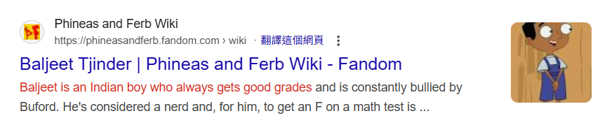

印度族群、膚色與辨識問題：深度審計與說明文件
章節導航
前言
本文件整理了一連串關於印度族群結構、膚色差異、海外視覺辨識機制，以及歐美流行文化中符號刻板化的深度剖析，用以說明為何特定生理表型的印度人在全球影視工業中被高度「超額代表」，而另一群具備淺膚色高加索特徵的本土人群則在跨文化視覺中被系統性「隱形」。
一、海外印僑為何常被刻板定格為深膚色？
- 早期移民的人口結構偏差：
歐美大航海及殖民時期的大規模海外勞工、契約工（Indentured Laborers）大多來自南印度（如泰米爾、安得拉）或底層勞動階層，其深膚色奠定了西方大眾對「印度人」的初級刻板坐標。
- 視覺符號的高對比標記：
在跨文化傳播中，深棕色皮膚被西方媒體當作最廉價、辨識門檻最低的「南亞族群代碼」，藉此與歐洲白人、東亞人快速切割。
- 淺膚色印度人的「視覺歸類失效」：
膚色白皙的北印高種姓人群在海外常被路人直覺誤認為南歐人（如義大利、希臘）、地中海人或中東黎凡特人，導致大眾「看見了卻認不出來」。
- 近期現象級案例：
2023–2024 年印度 21 歲力量舉選手 Keyaa Banerji 爆紅，因其深邃雙眼與白皙皮膚被全球網友驚呼「好看得不像印度人」。其背後真相在於其姓氏「Banerji（Banerjee）」為孟加拉頂級婆羅門（Kulin Brahmin）大姓，其外貌完全是印歐雅利安基因庫在內婚制下的生理實相，卻反襯出大眾對印度長相的普遍認知盲區。
你看不到，不代表他們不存在；而是當他們出現在你眼前時，你拒絕承認那是「印度人」。
二、西方動畫工業的極簡符號化：《飛哥與小佛》中的 Baljeet
- 卡通畫風下的幾何閹割：
2D 卡通線條極端簡化，無法展現細膩的面部 3D 骨骼縱深（如鼻骨起點、眶骨凹凸）。
- 膚色作為唯一辨識槓桿：
官方設定 Baljeet 為印度書呆子小孩，製作團隊必須將其塗裝為顯著的深黑褐色皮膚與微捲短髮，否則觀眾在無文字說明下極易產生跨種族混淆（甚至誤認為非裔角色）。
- 文化工業的雙重鎖死：
歐美編劇透過「深色皮膚 + 濃厚南亞口音 + 數學學霸/書呆子性格」的固定三件套，構建了一套全球通用的「印度人符號牢籠」。

三、淺膚色印度人在歐美的「辨識錯位」與認知本質
- 大眾的日常生活辨識高度依賴「表層特徵採樣」（膚色、口音、服裝飾品），而非基因分析或體質人類學維度。
- 當一位高加索五官且皮膚白皙的印度人操著一口標準流利的英式/美式英語時，西方大眾的認知神經網絡會優先將其匹配至「地中海/中東/南歐」分類標籤。
現代體質遺傳學澄清：
19 世紀殖民時代粗暴的「高加索人種（Caucasoid）」生物劃分早已被現代群體遺傳學揚棄。印度人絕非歐洲白人的「次級複製品」，而是由歐亞草原印歐人群、伊朗農業人群與南亞古老採集狩獵族群在數千年間高度演變融合而成的獨特群體。
四、跨族裔政治符號學：賀錦麗（Kamala Devi Harris）的雙重視角
- 母系血統：
母親 Shyamala Gopalan 來自印度南部泰米爾納德邦的婆羅門家庭，具有顯著的南亞特徵。
- 父系血統：
父親 Donald J. Harris 為非裔牙買加裔經濟學教授。
- 傳播政治上的角色切換：
賀錦麗在不同政治場域與受眾面前，其「非裔黑人女性首腦」與「南亞印度裔移民之女」的符號會根據選舉利益彈性調用，生動詮釋了種族標籤在政治修辭中的高度流動性。
五、破解迷思：古 DNA 視角下的南亞遺傳光譜
坊間常有「印度人是白人分支，只是血統不純」的通俗言論，在現代群體遺傳學面前完全站不住腳：
- 古基因組雙核心模型： 現代南亞人群的遺傳底層由兩大成分奠定：
- 古北印度成分（ANI - Ancestral North Indian）：
包含顯著的歐亞草原青銅時代牧民（Steppe_MLBA）與伊朗新石器農民血統，與歐洲人群共享部分遠古同源基因，廣泛分佈於北印及高種姓階層。
- 古南印度成分（ASI - Ancestral South Indian）：
由遠古印度土著「古南亞採集狩獵群（AASI）」與遠古伊朗農民混合而成，在南印及低種姓/部落群體中比例極高，表現為較深的黑色素沉積。
- 種姓制度的「基因冰凍效應」：
長達數千年的嚴格內婚制阻止了兩大成分的均質融合，形成了從北到南、從高階婆羅門到低階不可接觸者之間極為劇烈的膚色與骨相階梯。
- 共享祖先不等於「次等分支」：
基因分支的演化是樹狀擴散與網狀交織的過程，將南亞人群視為「劣化版白人」是 19 世紀社會達爾文主義與殖民種族主義留下的認知毒素。
南亞基因演化交織架構示意圖
六、影視工業的內外分流：本土「白皙神格」 vs 海外「深膚標籤」
在印度本土的文化工業中，商業票房與大眾美學長期被北印雅利安高種姓骨相牢牢統治。頂級影星如阿米爾·罕（Aamir Khan，普什圖高加索血統）、沙曼·喬希（Sharman Joshi，古吉拉特婆羅門世家），皆擁有與南歐無異的立體五官與淺白皮膚。百集史詩電視劇《佛陀》在選角時，更是全套起用淺膚白皙的高種姓演員來扮演佛陀與釋迦族王室，藉由高加索美學換取崇高的收視率與神聖性。
然而，一旦敘事鏡頭切換至西方歐美作品，工業流水線為了節省大眾辨識成本，會立刻抹除這層內部階層多樣性，強制使用深膚色作為單一標籤（如 Baljeet）。這導致了一種荒謬的割裂：印度人自己看著螢幕上的白人化神明與明星，而西方大眾卻深信所有印度人都如焦炭般黝黑。
角色膚色設計示意圖：本土商業美學 vs 海外刻板符號
七、結論與認識論總結
- 媒體代表性的階層過濾：
歐美影視在深膚色上過度標記南亞，而本土影視則在淺膚色上極致神格化高種姓，兩者共同閹割了南亞真實的多元光譜。
- 社會辨識的表象牢籠：
大眾在日常中無法以科學基因看人，導致許多淺膚色印度人永久處於「視覺上被偷換國籍」的隱形狀態。
- 終結粗暴二元對立：
理解印度族群不能停留在「全黑」或「全白」的低階思維，唯有正視 AASI、伊朗農業先民與歐亞草原牧民在種姓制度下的動態博弈，才能徹底看清跨文化流行符號背後的權力代碼。
族群辨識從來不是客觀的生物學鏡像，而是地緣政治、商業算計與集體刻板印象共同調教出的視覺幻覺。